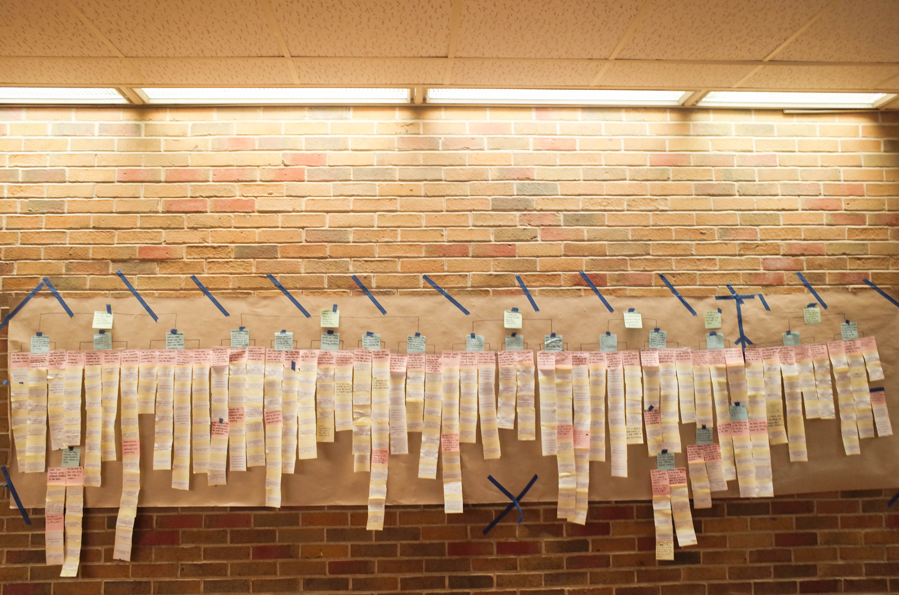
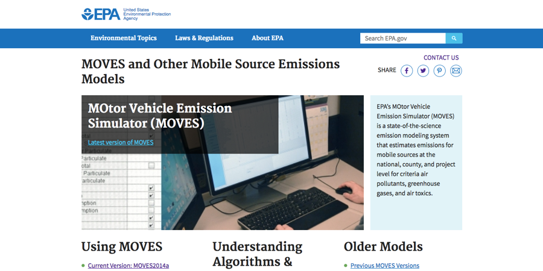
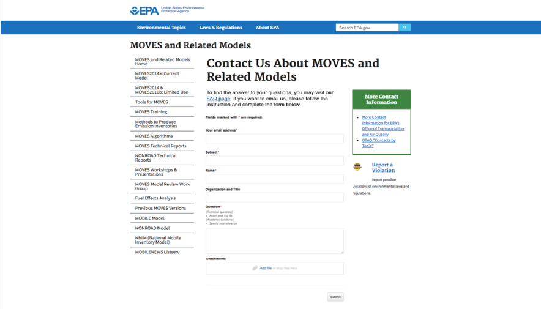
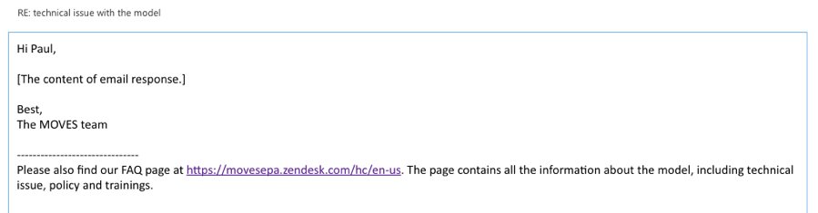
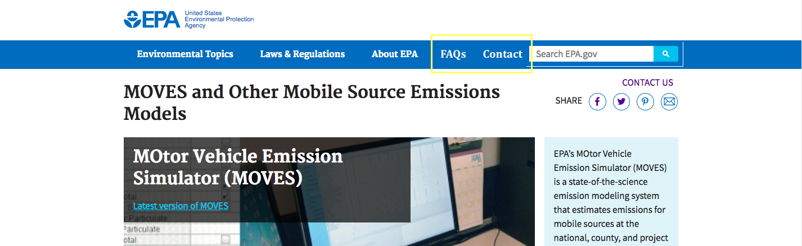
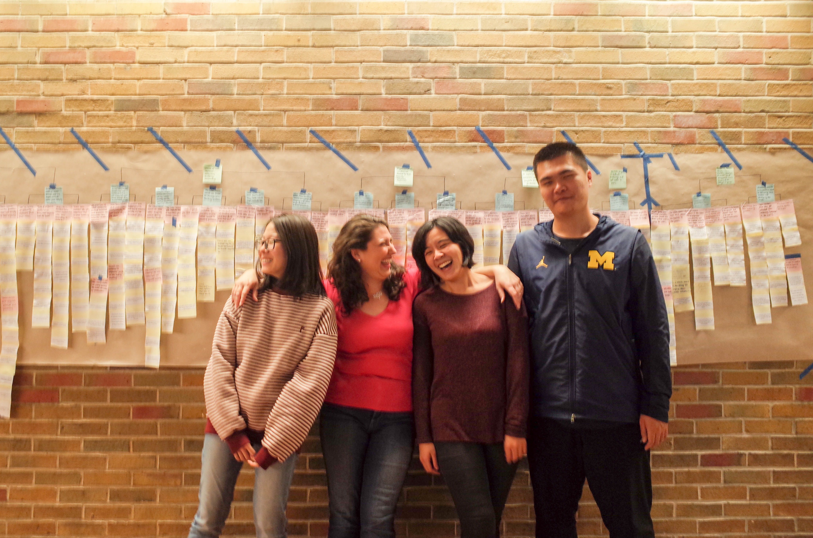

Inbox Work at EPA
A consulting project to streamline workflow for the inbox team at U.S. Environmental Protection Agency
Service Design

Project Type
Contextual Inquiry
Group Project
Duration
Fall 2017 (3 months)
Role
UX Researcher
Project Manager
Skills
Contextual Inquiry
Interview
Affinity Analysis
The Challenge
FINDING THE ROOT CAUSE
Our client, the inbox team under Motor Vehicle Emission Simulator (MOVES) team at U.S. Environmental Protection Agency (EPA), expressed their frustrations of not having enough time for answering emails. Receiving emails from different parties all over the world, they hope to cut down the time responding to emails without compromising their relationship with the public.
“We are extremely resource-constrained in responding to the questions to our inbox”
--Initial problem statement from the client
Design Process
UNDERSTAND THE PROBLEM BY GETTING TO THE FIELD
Research
UNDERSTAND THE BIG PICTURE
Before we jumping into collecting data, we came to our client to get debriefed about their current workflow and observe how they work in the natural setting. We also conducted background research to understand similar problems of other organizations to inform our solutions. We found the two competing goals of our client:
We also developed a flow diagram to represent the team’s workflow and outlined the primary tasks.
LEARN FROM REAL USERS
CONTEXTUAL INQUIRY
We held 5 rounds of interviews with the inbox team members to understand their frustrations, feelings and needs regarding their job. After each round of interviews, our team help interpretation sessions to revisit and interpret data, leading us to over 500 notes that made up our finding.
AFFINITY DIAGRAM
We then build an affinity wall by clustering and ordering notes into hierarchical order, and identified the overarching themes of the qualitative data we had collected.
THE ACTUAL ROOT CAUSE
Based on our research, instead of having too much emails, we concluded that the real causes that contributed to the client’s problems was spending too much time on ambiguous and redundant emails.
“I often receive questions that the answers are already on the FAQ page.”
“Sometimes I have to copy and paste the reply [for repeated questions].”
“[Last week] I spent 2 to 4 hours on a dead end question.”
SOLUTION
ISSUES WITH CURRENT DESIGN
Knowing the root cause, we examined current web design of the MOVES model to understand the issues that caused users’ confusion. We found that the users can easily access the inbox team’s email address with the current web design. However, there are limited guidelines and resources for users’ emails. Furthermore, the FAQ page is nestled deeper in the website and not as salient as email address. This may lead to ambiguous or redundant questions that lack information the inbox team needs to answer those questions.
BRAINSTORM
We brainstormed for potential solutions for the problem, and rated each solutions with a list of considerations based on our client’s condition.
RECOMMENDATIONS
In our final report and presentation to the client, we proposed several recommendations focus on decreasing the overall time spent on emails. We aim to help the inbox team categorize emails more efficiently, cut down on the number of ambiguous or redundant questions, and reduce the total number of emails.
Recommendation 1: Inquiry form
Based on our findings, we recommend that the inbox team provides guidelines for users before they formulate their email. These guidelines will inform users about what kind of information they should provide, and will be dependent on what type of question they are asking.
This form will help the inbox team standardize incoming questions. The format will help the inbox team categorize and prioritize emails by senders’ organization and question type, reduce the time reading through email content in meetings, and eventually shorten the time spent triaging the email.
Recommendation 2: Footer
To make the FAQ page and other existing resources, such as webinars and user guides, more public and cut down the number of redundant emails, we recommend including a footer, as suggested by an interviewee, in every email correspondence.
The footer can be easily created with the signature function in Outlook, our client’s primary tool of use. It can serve as a reminder for users about what kinds of information they can find on the FAQ page, and accordingly, direct them to look for answers therein.
Recommendation 3: Relocate the FAQ and Contact Link
We propose relocating the link to FAQ and “Contact Us” pages to the menu bar. This would on the one hand make both pages easier to find. On the other hand, putting the FAQ and “Contact Us” link on the same level can avoid the strong implication of encouraging users to ask questions by sending emails.
Takeaway
CREATING RAPPORT IN AND OUT OF THE TEAM
This project is the first client-based project during my study. I found maintaining an efficient and frequent connections with our client really helped our team understand their frustrations in-depth and comprehensively. I was grateful our interviewees were all welcoming and comfortable to share their feelings during the contextual inquiries. Our team also collaborated very well with each other contributing our own strengths to this project.
